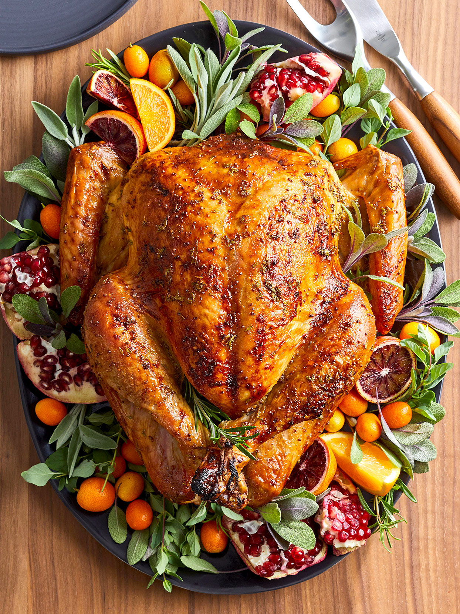

Roast Turkey with Stuffing

Ingredients
- 12 lb whoel turkey
- 1(6oz) package dry bread stuffing mix
- 1 cup water
- 1 tablespoon butter
- 1 cup chopped celery
- 1/4 cup chopped onion
- 4 slices toaste white bread, torn into small pieces
- salt and pepper to taste
- 2 tablespoons vegetable oil
Directions
- Preheat overn to 350°F.
Rinse turkey, romove giblets and place in a shallow roasting pan.
- Prepare stuffing according to package directions.
Mix in water.
- Melt butter in a medium saucepan over medium heat,
and slowly cook and stir the celery and onion until tender.
- Mix celery, onion, and toasted bread pieces into the stuffing,
and season with salt and pepper.
Loosely scoop stuffing into the turkey body cavity and neck cavity.
Rub the extrerior of the turkey with vegetable oil.
- Loosely cover turkey with aluminum foil,
and roast for 3 1/2 to 4 hours,
until the thickest part of the thigh reaches 180°F
and the interior of the stuffing reach 165°F.
Remove foil during the last half hour of cooking to brown the bird